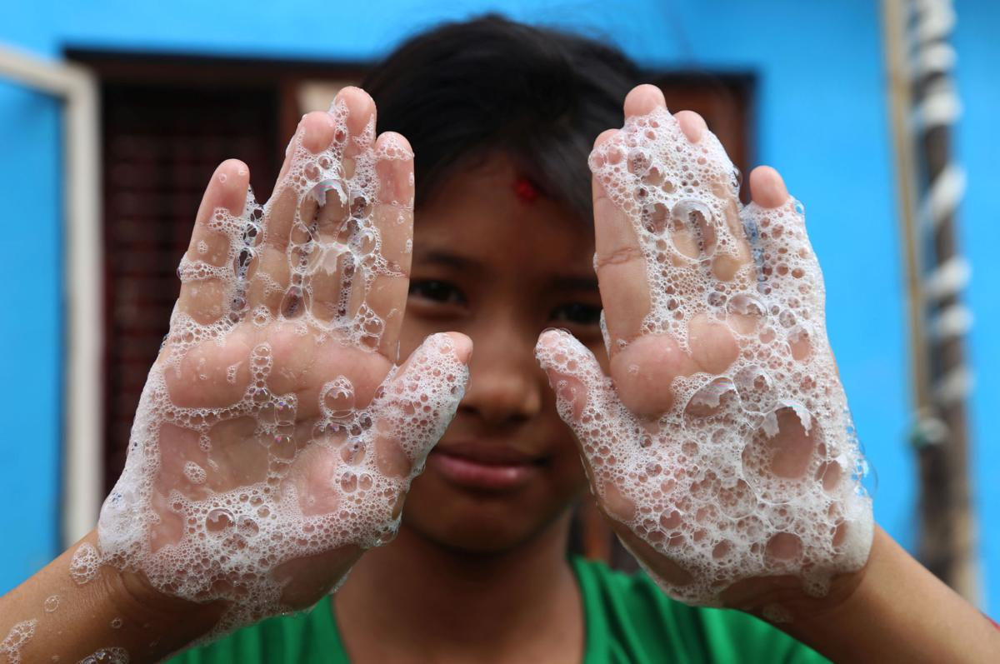

HSCI-601 Project -- Soap for Sudan
You don't need a cape,

you don't need a phone booth,


and you don't need spidey sense
to be a superhero.

You just need a bar of soap.
Thousands of kids, just like you, die everyday.
Simply because they didn't have soap to wash their hands.
A bar of soap gives them super power,
the power they need to kill germs.